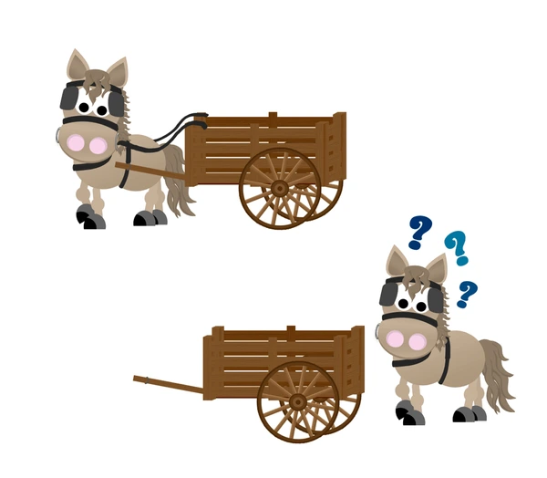

Publications & Presentations & Resources
A comprehensive overview of my research publications and conference presentations in psychology, AI, and related fields. Also, a selection of tools and platforms I personally create or recommend for research, analysis, and open science.
Resources

Personality Reading List
A curated list of literature for anyone interested in personality research.
Publications

Conference Presentations
• Wang, P., Sylvara, A., Sun, T., Hebl, M. R., & Oswald, F. L. (2025). Differential embedding dimension functioning in natural language processing for psychological assessment. [Oral presentation]. International Meeting of the Psychometric Society (IMPS 2025), Minneapolis, MN, United States.
• Wang, P., & Oswald, F. L. (Co-Chairs) (2025). Bridging Disciplines: How Computer Science and I-O Psychology Benefit Each Other [Alternative Session Type]. Society for Industrial and Organizational Psychology Annual Conference (SIOP 2025), Denver, CO, United States.
• Wang, P., Zou, H., Yan, Z., Guo, F., Sun, T., Xiao, Z., & Zhang, B. (2025). Not yet: Large language models cannot replace human respondents for psychometric research. In Hickman, L., & Liu, M.(Co-Chairs) (2025). Machine learning for I-O 7.0: Large language models for assessments [Symposium]. Society for Industrial and Organizational Psychology Annual Conference (SIOP 2025), Denver, CO, United States.
• Wang, P., Sylvara, A., Sun, T., Hebl, M. R., & Oswald, F. L. (2025). Differential embedding dimension functioning in natural language processing for psychological assessment. In Hou, D. X., & Sun, T. (Co-Chairs) (2025). Innovations in AI assessment of individual differences: Improving validity and equity [Symposium]. Society for Industrial and Organizational Psychology Annual Conference (SIOP 2025), Denver, CO, United States.
‚Ä¢ Wang, P.*, Xiao, Z.*, Chen, H., & Oswald, F. L. (2024). Will the real Linda please stand up... To large language models? Examining the representativeness heuristic in LLMs [Oral presentation]. The Conference on Language Modeling (COLLM 2024), Philadelphia, PA, United States. üèÖOral spotlight presentation (top 2%)
• Wu, F., Wang, P., & Oswald, F. O. (2024). The influence of disability and career challenges on vocational interests. In Hoff, K. A. (Chair) (2024). To RIASEC and beyond: Advances in vocational interest research [Symposium]. Society for Industrial and Organizational Psychology Annual Conference (SIOP 2024), Chicago, IL, United States.
• Wang, P., & Oswald, F. L. (2024). Leveraging synthetic data for advancements in organizational research. In Liou, G., & Tay, L. (Co-Chairs) (2024). Future of performance prediction and evaluation: Artificial intelligence and big data [Symposium]. Society for Industrial and Organizational Psychology Annual Conference (SIOP 2024), Chicago, IL, United States.